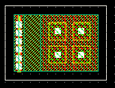
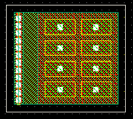
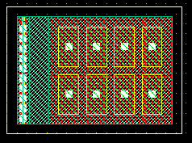

|
unit width(x) = 2u, unit length(y) = 2u, columns in x = 2, rows in y = 2
 |
unit width(x) = 4u, unit length(y) = 2u, columns in x = 2, rows in y = 4  |
|---|---|
|
unit width(x) = 2u, unit length(y) = 4u, columns in x = 4, rows in y = 2  |